리눅스마스터-1급 (2003-06-07 기출문제)
1과목: 리눅스 실무의 이해
1. 운영체제의 기능이라고 보기 어려운 것은?
- 사용자와 컴퓨터 시스템 간의 인터페이스 제공
- 시스템 자원 스케줄링
- 응용프로그램 개발을 위한 GUI 환경의 제공
- 컴퓨터 시스템의 오류 처리
(정답률: 59%)

2. 인터럽트(Interrupt)에 대한 설명으로 가장 적절 하지 못한 것은?
- 인터럽트란 어떤 장치가 다른 장치의 작업을 일시 중지시키고 자신의 상태를 알리는 기능을 말한다.
- 인터럽트가 발생하면 수행되던 작업이 중지되고 인터럽트 처리 루틴을 수행한다.
- 인터럽트가 발생하면 수행 중이던 작업이 종료 된다.
- 다양한 인터럽트 처리를 위해 인터럽트에 우선순위를 부여할 수 있다.
(정답률: 73%)
3. 리눅스에 대한 설명으로 가장 적절하지 못한 것은?
- 커널 버전은 안정 버전과 개발 버전으로 구분할 수 있다.
- 마이크로 커널(Micro Kernel)의 구조이다.
- 초기에는 Minix 운영체제의 확장판으로 개발 되었다.
- 여러 사용자가 동시에 접속하여 시스템을 사용할 수 있는 다중 사용자를 지원한다.
(정답률: 63%)
4. 다음의 커널 버전에 대한 설명으로 맞는 것은?
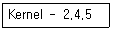
- 2번의 커다란 변화가 있었다.
- 4번의 패치가 있었다.
- 5개의 파일로 구성되어 있다.
- 개발 버전이다.
(정답률: 60%)
5. 리눅스의 배포판에 대한 설명으로 가장 적절하지 못한 것은?
- 배포판이란 리눅스 커널과 여러 프로그램들을 하나의 패키지로 묶은 것이다.
- 대표적으로 레드햇, 데비안, 맨드레이크 등이 있다.
- 배포판에는 여러 종류가 있으나 그 내용들은 모두 같다.
- 배포판들은 보통 공식 리눅스 커널 버전을 사용 한다.
(정답률: 89%)
6. 다음의 설명에 해당하는 RAID 형태는?
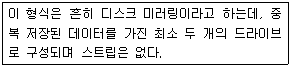
- RAID-0
- RAID-10
- RAID-2
- RAID-1
(정답률: 71%)
7. 리눅스의 부트 로더(Boot Loader)에 대한 설명으로 가장 적절하지 못한 것은?
- 리눅스에서는 여러 부트 로더를 선택적으로 사용할 수 있다.
- 부트 로더는 보통 MBR에 위치한다.
- LILO, GRUB 등이 사용되고 있다.
- PC(Personal Computer)에는 설치할 수 없다.
(정답률: 89%)
8. 리눅스 파일 시스템의 구조를 이루는 구성 요소에 대한 설명으로 맞는 것은?
- 수퍼 블록 : 파일의 이름을 제외한 해당 파일의 모든 정보를 가지고 있다.
- 간접 블록 : 추가적인 데이터 블록을 위한 포인터들이 사용할 공간이며 동적으로 할당된다.
- 아이노드 : 파일시스템의 전체적인 정보를 가지고 있다.
- 디렉토리 블록 : 파일에서 데이터를 저장하기 위해 사용된다.
(정답률: 50%)
9. 리눅스에서 사용하는 윈도우 매니저가 아닌 것은?
- fvwm
- twm
- AfterStep
- KDE
(정답률: 50%)
10. X 윈도우의 툴킷(Toolkit)이 아닌 것은?
- Xlib
- Motif
- GTK
- Qt
(정답률: 30%)
11. 본 쉘(Bourne shell)에서 사용하는 변수의 의미가 바르지 못한 것은?
- $0 : 프로그램의 이름
- $* : 명령 라인의 모든 인자(argument)
- $# : 종료 코드
- $$ : 현재 프로세스의 ID
(정답률: 62%)
12. 쉘 프로그램의 첫 번째 행에 포함해야할 문장으로 가장 적절한 것은?
- #!/bin/shprogram
- #!/bin/sh
- #!/bin/program
- #!/bin/include
(정답률: 78%)
13. 프로세스 제어 블록(Process Control Block)에 저장되는 프로세스 관련 정보로 가장 적절하지 못한 것은?
- 프로세스 식별 번호(PID)
- 문맥 저장 영역
- 프로세스의 현재 상태
- 프로세스의 사용자
(정답률: 37%)
14. 다음의 설명에 해당하는 프로세스 상태는?
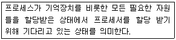
- 생성 상태(Created state)
- 지연 상태(Suspend state)
- 대기 상태(Sleep state)
- 준비 상태(Ready state)
(정답률: 65%)
15. 다음은 프로세스 스케줄링에 대한 설명이다. ( )안에 알맞은 것은?
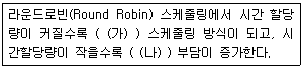
- (가) : FIFO(First In First Out), (나) : 문맥교환
- (가) : SJF(Shortest Job First), (나) : 기억장치
- (가) : FIFO(First In First Out), (나) : 기억장치
- (가) : SJF(Shortest Job First), (나) : 문맥교환
(정답률: 48%)
16. TCP/IP 프로토콜 중 IP 주소와 네트워크 하드웨어 주소(MAC Adderss)를 서로 변환시켜주는 기능을 담당하는 프로토콜은?
- ARP
- ICMP
- UDP
- IP
(정답률: 69%)
17. 한 개의 네트워크 ID당 최대 254개의 호스트 주소를 제공할 수 있는 IP 클래스는?
- A
- B
- C
- D
(정답률: 78%)
18. 네트워크 인터페이스의 이름에 대한 설명으로 틀린 것은?
- lo는 로컬 네트워크 인터페이스이다.
- eth1은 이더넷 인터페이스이다.
- ppp1은 PPP(Point-to-Point) 인터페이스이다.
- sl1은 SLIP(Serial Line Internet Protocol) 인터페이스이다.
(정답률: 32%)
19. 다음의 ifconfig 명령에 대한 설명으로 틀린 것은?
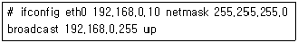
- eth0 장치의 IP 정보를 설정하고 사용할 수 있도록 해준다.
- eth0 장치의 IP를 192.168.0.10로 설정한다.
- eth0 장치의 서브넷 마스크를 255.255.255.0으로 설정한다.
- gateway 주소는 자동으로 설정된다.
(정답률: 69%)
20. 라우팅 테이블에 IP 주소가 192.168.10.1인 디폴트 게이트웨이를 추가하기 위한 명령은?
- route add -net 192.168.10.1 netmask 255.255.255.0 dev eth0
- ifconfig eth0:1 192.168.10.1 netmask 255.255.255.0 broadcast 192.168.10.255
- route add default gw 192.168.10.1 eth0
- ifconfig eth0:1 192.168.10.210 gateway 192.168.10.1 netmask 255.255.255.0
(정답률: 47%)
2과목: 리눅스 시스템 관리
21. 시스템관리자 홍길동은 useradd 명령어를 이용하여 ihd라는 새로운 사용자 계정을 다음과 같은 조건 으로 생성하려고 한다. 이를 위한 명령으로 알맞은 것은?
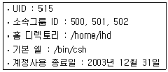
- # useradd -u 515 -g 500,501,502 -d /home/ihd -s /bin/csh -e 2003-12-31 ihd
- # useradd -u 515 -G 500,501,502 -d /home/ihd -s /bin/csh -e 2003-12-31 ihd
- # useradd -u 515 -g 500,501,502 -d /home/ihd -s /bin/csh -f 2003-12-31 ihd
- # useradd -u 515 -G 500,501,502 -d /home/ihd -s /bin/csh -f 2003-12-31 ihd
(정답률: 42%)
22. 호스팅 서버 관리자인 홍길동은 요금 체납으로 인해 kim 이라는 계정의 서버 사용을 일시 중지하기로 하였다. 이렇게 특정 사용자 계정에 대한 서버 접속을 일시 중지(계정 잠금)하는 명령과 반대로 다시 접속 가능(계정 풀림)하도록 하게 하는 명령이 옳게 짝지어진 것은?
- 계정잠금 : passwd -l, 계정풀림 : passwd -u
- 계정잠금 : passwd -u, 계정풀림 : passwd -l
- 계정잠금 : passwd -s, 계정풀림 : passwd -d
- 계정잠금 : passwd -d, 계정풀림 : passwd -s
(정답률: 65%)
23. useradd와 같은 명령을 사용하지 않고 사용자를 수동으로 추가하기 위해 반드시 필요한 작업으로 보기 어려운 것은?
- /etc/passwd 파일에 새로운 사용자 Entry를 만들어 준다.
- /etc/group 파일에 새로운 그룹 Entry를 만들어 준다.
- 로그인에 필요한 홈 디렉토리를 만들어 준다.
- 홈 디렉토리의 소유를 해당 사용자로 바꾸어 준다.
(정답률: 60%)
24. 다음 중 패스워드 파일(/etc/passwd)에서 확인 할 수 있는 항목으로 묶여진 것은?
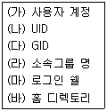
- (가), (나), (다), (마), (바)
- (가), (나), (다), (라), (바)
- (가), (나), (다), (라), (마)
- (가), (나), (라), (마), (바)
(정답률: 50%)
25. 사용자 계정의 패스워드 만료 기간 및 시간 정보를 변경하는 명령은?
- chage
- date
- chmod
- time
(정답률: 65%)
26. 쿼타(Quota) 설정에 대한 설명으로 틀린 것은?
- 쿼타를 사용하기 위해서는 /etc/fstab 파일의 쿼타를 사용할 파티션에 usrquota 설정을 하고, quota.user 파일을 생성해야 한다.
- soft limit란 한 사용자가 사용할 수 있는 최대 용량을 가리킨다. 그러나 유예 기간 내에는 사용 용량 초과에 대해서 경고를 받게되는 경계선 역할을 한다.
- hard limit란 유예기간이 설정되어 있을 때에만 동작한다. 이것은 디스크의 최대 사용 용량을 의미하는 것으로 사용자는 여기에 설정된 용량 이상을 사용할 수 없다.
- 사용자들에게 디스크 할당량을 부여하기 위해 서는 quotaon ID 명령을 이용한다.
(정답률: 39%)
27. 파티션 분할 프로그램인 fdisk에서 사용되는 명령에 대한 설명으로 틀린 것은?
- a : 지정된 파티션을 부트 가능한 플래그로 변경 한다.
- l : 시스템에서 설정 가능한 파티션 타입을 보여 준다.
- t : 새로운 파티션을 생성한다.
- d : 현재 존재하고 있는 파티션을 삭제한다.
(정답률: 54%)
28. umask 값이 0022로 설정되어 있을 때, 생성되는 파일과 디렉토리의 기본 퍼미션(Permission)으로 맞는 것은?
- 파일 : 755, 디렉토리 : 644
- 파일 : 644, 디렉토리 : 755
- 파일 : 701, 디렉토리 : 644
- 파일 : 755, 디렉토리 : 601
(정답률: 46%)
29. umask가 0022인 시스템에서 아래 명령의 실행 후, test 디렉토리의 접근 권한으로 알맞은 것은?
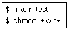
- drwxrw-rw-
- drwxr-xr-x
- drwxr--r--
- drwxrwxrwx
(정답률: 27%)
30. 다음은 /dev/hdx1 파티션의 내용을 크기가 같은 파티션인 /dev/hdy1에 모두 복사하기 위한 명령이다. ( ) 안에 알맞은 명령어는?
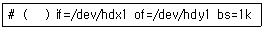
- cp
- df
- mv
- dd
(정답률: 47%)
31. 모든 프로세스들을 종료시키고, 파일 시스템의 마운트를 해제하는 작업을 포함한 셧다운(Shutdown) 절차에 대해 책임을 지는 Runlevel은?
- Runlevel 0
- Runlevel 1
- Runlevel 4
- Runlevel 5
(정답률: 64%)
32. 다음은 어떤 명령의 실행 결과인가?(원본 시험문제 자체가 화질이 흐립니다.)
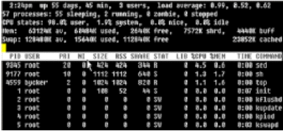
- ps
- pstree
- top
- jobs
(정답률: 70%)
33. 리눅스 시스템에서 각 계정별 cron 설정 파일이 저장되는 디렉토리의 절대 경로명 과 시스템 전체의 cron 설정 파일 이 순서대로 맞게 짝지어진 것은?
- /var/spool/cron/, /etc/cron
- /var/lib/cron/, /etc/cron
- /var/spool/cron/, /etc/crontab
- /var/lib/cron/, /etc/crontab
(정답률: 42%)
34. 다음은 어떤 명령어의 매뉴얼 페이지이다. ( )안에 알맞은 명령어는?
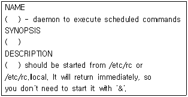
- cron
- nice
- exec
- sync
(정답률: 75%)
35. 다음과 같은 프로그램이 실행된 후, 터미널에 출력되는 결과로 알맞은 것은?
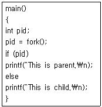
- This is parent.
- This is child.
- This is child. This is parent.
- 출력 결과가 없다.
(정답률: 45%)
36. rpm 데이터베이스를 다시 만드는 명령은?
- rpm --rebuild
- rpm --rebuilddb
- rpm --replace
- rpm --replacedb
(정답률: 40%)
37. rpm 명령의 설치 옵션에 대한 설명으로 틀린 것은?
- --nodeps : 해당패키지의 Document 부분은 설치하지 않는다.
- -U, --upgrade : 설치되어 있는 패키지를 새로운 버전으로 업그레이드 한다.
- --replacefiles : 이미 설치된 다른 패키지의 파일을 덮어쓰면서라도 패키지를 강제로 설치 한다.
- -h, --hash : 패키지를 풀 때 해시마크(#)를 표시한다.
(정답률: 70%)
38. main.c, a.c, b.c 세 개의 파일을 컴파일과 링크를 하여 test라는 프로그램을 만들기 위한 명령으로 가장 적절한 것은?
- $ gcc -c test main.c a.c b.c
- $ gcc test main.c a.c b.c
- $ gcc main.c a.c b.c
- $ gcc -o test main.c a.c b.c
(정답률: 67%)
39. tar로 묶인 exam.tar 파일에 linux.txt라는 파일을 추가하는 명령으로 알맞은 것은?
- $ tar cvf exam.tar linux.txt
- $ tar xvf exam.tar linux.txt
- $ tar tvf exam.tar linux.txt
- $ tar rvf exam.tar linux.txt
(정답률: 22%)
40. RPM 패키지의 명명 규칙으로 알맞은 것은?
- 패키지이름-아키텍쳐-버전-릴리즈.rpm
- 아키텍쳐-패키지이름-버전-릴리즈.rpm
- 패키지이름-버전-릴리즈-아키텍쳐.rpm
- 아키텍쳐-버전-릴리즈-패키지이름.rpm
(정답률: 46%)
41. 커널 패치에 대한 설명으로 가장 올바른 것은?
- 패치 파일은 커널의 전체를 수정한다.
- 가장 최근의 패치만을 적용시키면 된다.
- 패치가 성공한 경우 패치된 파일의 원본은 이름 뒤에 .orig가 붙어 백업된다.
- 패치가 실패한 경우 실패를 알 수 없다는 단점이 있다.
(정답률: 50%)
42. 다음은 커널 컴파일 과정을 순서 없이 나열한 것이다. 순서대로 바르게 나열된 것은?
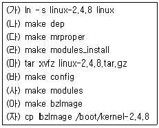
- (마)-(가)-(다)-(바)-(나)-(아)-(사)-(라)-(자)
- (마)-(가)-(바)-(다)-(나)-(아)-(사)-(라)-(자)
- (마)-(가)-(아)-(다)-(바)-(나)-(사)-(라)-(자)
- (마)-(가)-(나)-(다)-(바)-(아)-(사)-(라)-(자)
(정답률: 46%)
43. 커널 컴파일에 대한 설명으로 틀린 것은?
- 커널 컴파일 환경 설정은 make config , make xconfig , make menuconfig 명령을 이용한다.
- make config 명령은 초기 커널 컴파일 시 주로 사용됐고, 그래픽과 메뉴방식으로 구성되며, 하드웨어 사양을 자동으로 감지하여 설정해 주는 매우 편리한 설정 방법이다.
- make xconfig 명령은 X 윈도우 모드에서 사용하며, Tcl/Tk라는 X 윈도우 그래픽툴킷 라이브러리가 필요하다.
- make menuconfig 명령은 메뉴 방식으로 구성되며, 방향키를 이용하여 하드웨어 정보에 맞는 환경을 설정할 수 있다.
(정답률: 75%)
44. 다음은 usb 마우스를 사용하기 위해 장치 파일을 만드는 명령이다. ( )안에 알맞은 명령어는?
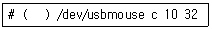
- mkfs
- mount
- mknod
- mkdir
(정답률: 37%)
45. 모듈에 대한 설명으로 틀린 것은?
- 코드를 포함하여 컴파일한 경우보다 수행 속도면에서 유리하다.
- 필요로 하는 코드를 동적으로 로드(Load)하여 커널의 크기를 줄일 수 있다.
- 새로운 커널 코드를 재부팅하지 않고 테스트 하는데 유리하다.
- 로드된 모듈은 커널의 한 부분이 된다.
(정답률: 19%)
46. 다음에서 설명하고 있는 커널 모듈관련 명령이 알맞게 짝지어진 것은?
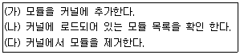
- (가) : insertmod (나) : listmod (다) : deletemod
- (가) : insmod (나) : lsmod (다) : rmmod
- (가) : insmodule (나) : lsmodule (다) : rmmodule
- (가) : insertmodule (나) : listmodule (다) : deletemodule
(정답률: 69%)
47. 다음은 프린터 설정 파일의 내용 중 일부이다. 이에 대한 설명으로 틀린 것은?
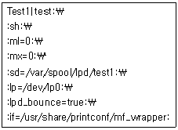
- sd는 Spool Directory의 약자로서 프린트할 데이터를 보내기 전에 임시로 저장되는 디렉토리를 의미한다.
- mx는 인쇄 가능한 최대 파일 크기를 나타낸다.
- if는 Suppress Headers를 의미하며 프린터의 장치 명을 지칭한다.
- lp는 프린터가 장착된 포트 이름을 의미한다.
(정답률: 42%)
48. 응급복구 디스크를 만들기 위해 사용할 플로피디스크에 대한 사전 작업이 순서대로 알맞게 된 것은?
- # mount -t ext2 /dev/fd0 /mnt/floppy
# fdformat /dev/fd0H1440
# mke2fs /dev/fd0 - # mke2fs /dev/fd0
# mount -t ext2 /dev/fd0 /mnt/floppy
# fdformat /dev/fd0H1440 - # fdformat /dev/fd0H1440
# mount -t ext2 /dev/fd0 /mnt/floppy
# mke2fs /dev/fd0 - # fdformat /dev/fd0H1440
# mke2fs /dev/fd0
# mount -t ext2 /dev/fd0 /mnt/floppy
(정답률: 50%)
49. 주변 장치와 설정 유틸리티가 잘못 짝지어진 것은?
- 프린터 : printconf
- 스캐너 : xsane
- 사운드카드 : sndconfig
- 마우스 : xconfigurator
(정답률: 45%)
50. 다음은 새로운 디스크를 장착하기 위해 사용하는 명령들을 순서 없이 나열한 것이다. 순서대로 알맞게 나열한 것은?
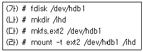
- (가)-(라)-(다)-(나)
- (나)-(라)-(가)-(다)
- (가)-(다)-(나)-(라)
- (나)-(가)-(라)-(다)
(정답률: 65%)
51. syslog.conf 파일에서 사용자 로그인 관련 부분을 파일에 저장하지 않고, 프린터(lp0)로 출력하기 위한 설정은?
- *.info /dev/lp0
- auth.* /dev/lp0
- authpriv.* /dev/lp0
- loginfo.* /dev/lp0
(정답률: 35%)
52. 다음은 어떤 로그 파일의 내용인가?
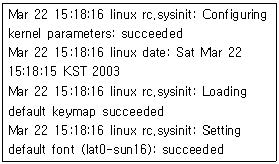
- boot.log
- lastlog
- dmesg
- xferlog
(정답률: 55%)
53. logrotate를 이용하여 할 수 있는 작업이 아닌 것은?
- 지정한 주기에 맞춰 오래된 로그 파일을 삭제 한다.
- 작업 시 에러가 발생하였을 때 시스템을 셧다운 시킨다.
- 로그 파일을 압축한다.
- 지정한 용량에 이르렀을 경우 로그 파일을 rotate 시킨다.
(정답률: 57%)
54. 웹 브라우저를 통해 리눅스 시스템에서 제공하는 웹 및 FTP 서버의 사용 로그 정보를 볼 수 있도록 해주는 도구는?
- Webalizer
- VNC
- Monitor
- LogMonitor
(정답률: 43%)
55. 시스템 보안 관련 패키지가 아닌 것은?
- Ipchains
- Pam
- Tripwire
- Telnet
(정답률: 77%)
56. 네트워크 외부에서 내부 네트워크의 리눅스 시스템으로 접속하기 위한 가장 안전한 방법은?
- telnet을 이용하여 root 권한으로 로그온 한다.
- ssh를 이용하여 일반사용자의 권한으로 로그온 한 뒤, su 명령어로 root 권한을 획득한다.
- rlogin을 이용하여 root 권한으로 로그온 한다.
- tftp를 이용하여 일반사용자 권한으로 로그온 한 뒤, su 명령어로 root 권한을 획득한다.
(정답률: 54%)
57. 부팅 과정에 적용할 수 있는 보안 설정으로 올바르지 못한 것은?
- 플로피 디스크로 부팅 하는 것을 막기 위해 CMOS 설정에서 플로피 부트 옵션을 사용하지 않는다.
- LILO에 password를 설정하여 부팅 시에 패스워드를 입력하도록 한다.
- LILO에 restricted를 설정하여 single 모드로 부팅 할 때 패스워드를 입력하도록 한다.
- LILO에 설정하는 password와 restricted 옵션은 커널 이미지마다 따로 설정할 수 없다.
(정답률: 50%)
58. 리눅스 시스템에서 백업(Backup)에 사용하는 명령에 대한 설명으로 틀린 것은?
- 파일을 테이프에 저장하기 위하여 cpio 명령을 사용한다.
- rsync 등의 명령을 이용하여 지정한 호스트와 데이터를 동기화 한다.
- dump 명령을 이용하여 로컬 시스템의 모든 파일 시스템을 한번에 백업할 수 있다.
- rmt는 dump, restore, tar와 유사한 프로그램에서 테이프 장치에 원격으로 접근 할 수 있는 기능을 제공한다.
(정답률: 48%)
59. 다음 중 백업 장치로 적당하지 못한 것은?
- CD-RW Drive
- 8mm DAT Drive
- DVD-RW Drive
- RAM Drive
(정답률: 67%)
60. 백업에 대한 설명으로 틀린 것은?
- 백업은 데이터가 지닌 가치를 보전하는 작업이다.
- 시스템 백업의 종류로 Incremental Backup, Full Backup 등이 있다.
- Incremental Backup은 기존에 백업한 자료를 갱신하기 위한 목적으로 사용된다.
- 압축을 이용한 백업을 통하여 백업 용량과 안정성을 높인다.
(정답률: 32%)
3과목: 네트워크 및 서비스의 활용
61. 다음 문제를 해결하기 위한 방법으로 올바른 것은?
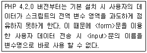
- php.ini에서 register_globals를 on으로 설정한다.
- 최신버전의 PHP를 설치한다.
- php.ini에서 post_max_size의 크기를 늘려준다.
- OpenSSL을 설치한다.
(정답률: 54%)
62. 다음의 pstree 명령 실행 결과에 대해 가장 적절하게 설명한 것은?
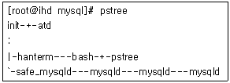
- 시스템에서 동작중인 mysql 서버 데몬은 총 5개 이다.
- safe_mysqld 명령을 통하여 mysql을 실행 시켰다.
- 모든 mysql 데몬 프로세스는 hanterm 프로세스의 자식 프로세스이므로 hanterm을 종료시키면 mysql도 함께 종료된다.
- 현재 이 시스템의 mysql 서비스가 외부로부터 4번의 요청을 동시에 받고 있음을 알 수 있다.
(정답률: 34%)
63. 다음은 Apache 설정 파일 중 일부이다. 이에 대한 설명으로 가장 적절하지 못한 것은?
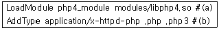
- DSO 방식으로 php 모듈이 적재되어 사용된다.
- 정적 라이브러리 방식으로 php를 컴파일 했다면 (a)설정은 필요 없다.
- 사용하고자 하는 php 스크립트의 확장자를 (b)설정에 추가할 수 있다.
- html 확장자는 Apache에 의해 해석되기 때문에 (b)설정에 추가 할 수 없다.
(정답률: 52%)
64. Apache 웹 서버에서 이름 기반 가상 호스트의 설정과 관련된 설명으로 틀린 것은?
- 하나의 IP 주소를 이용하여 여러 개의 도메인 주소를 사용할 수 있다.
- httpd.conf내의 <VirtualHost> ~ </VirtualHost> 설정을 이용한다.
- <VirtualHost 192.168.0.101>와 같이 가상호스트 별로 서로 다른 IP를 설정하여야 한다.
- 각 가상 호스트별로 에러 로그와 액세스 로그를 설정할 수 있다.
(정답률: 50%)
65. Apache 웹 서버의 로그 파일에 대한 설명으로 틀린 것은?
- access_log를 분석하여 접속한 시스템의 IP 주소 통계를 산출할 수 있다.
- error_log를 분석하여 웹 서버의 구동 시간 및 종료 시간을 알아낼 수 있다.
- error_log를 분석하여 Nimda 바이러스에 감염된 시스템의 접근을 감지할 수 있다.
- agent_log는 Apache 설치 시 기본적으로 동작하도록 설정되어 있다.
(정답률: 14%)
66. CGI에 대한 설명으로 가장 적절하지 못한 것은?
- CGI 스크립트의 작성에 많이 사용되는 언어로는 C/C++, Perl, PHP, ASP 등이 있다.
- HTML로 작성된 고정 콘텐츠 전송과 달리 프로세스의 생성과 초기화 시간이 필요하지 않다.
- 웹 서버 확장의 하나로 외부의 프로그램을 실행시켜 그 결과를 HTML로 돌려주는 방식이다.
- CGI 스크립트를 계속 동작시키면 메모리 자원의 부족을 야기하게 된다.
(정답률: 57%)
67. 웹 서버에 대한 설명으로 틀린 것은?
- HTML 파일이나 이미지 같은 고정 콘텐츠를 브라우져로 전송한다.
- PHP나 Perl 등을 이용하여 동적 콘텐츠를 브라우져로 전송한다.
- 데이터 베이스 서버와 한 시스템에서 동시에 사용할 수 없다.
- 리눅스 시스템에는 주로 Apache 웹 서버가 사용 된다.
(정답률: 77%)
68. 다음 명령의 실행 결과를 가장 적절하게 설명한 것은?
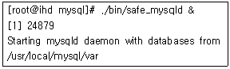
- /usr/local/mysql/var에 존재하는 각종 로그 파일을 백업하고 있다.
- 관리자가 mysql 서버에서 새로운 데이터베이스를 생성하고 있다.
- mysql 데몬을 시작시키고 있다.
- 프로세스 아이디가 24879인 mysql 프로세스의 설정 내용을 갱신시키고 있다.
(정답률: 60%)
69. htpasswd 프로그램은 웹 서버 각 디렉토리의 접근 제어를 위한 인증 정보를 가지는 파일을 생성 관리 한다. 다음 중 .htpasswd 파일을 처음 생성하여 jone이라는 사용자를 추가하는 명령으로 올바른 것은?
- htpasswd -c .htpasswd jone
- htpasswd .htpasswd jone
- htpasswd jone
- htpasswd -n .htpasswd jone
(정답률: 48%)
70. NFS 데몬 가동 후 서버 측에서 새로운 디렉토리를 공유하기 위해 사용하는 명령어로 알맞은 것은?
- rpcinfo
- mount
- exportfs
- ntsysv
(정답률: 54%)
71. 삼바(Samba)에 대한 설명으로 가장 적절하지 못한 것은?
- 삼바는 SMB 프로토콜을 사용하는데 이것은 Server Message Block의 약어이다.
- 삼바는 윈도우즈 클라이언트가 유닉스 서버에 있는 파일이나 프린터를 공유할 수 있게 해준다.
- 삼바는 TCP/IP 프로토콜 상에서 NetBEUI 프로토콜을 사용한다.
- SWAT은 삼바를 설정하는 도구로서 901번 포트를 사용한다.
(정답률: 43%)
72. 다음 삼바(Samba) 설정 파일의 내용에 대한 설명으로 틀린 것은?
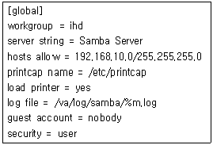
- 네트워크 주소와 넷 마스크가 서로 일치하는 호스트만 삼바 서버에 접속이 가능하다.
- 프린터 목록을 자동으로 로드(Load)하고 있다.
- 기본 보안 정책으로 사용자/패스워드를 통해 삼바 서버에 접근한다.
- guest의 삼바 서버 접근을 허용하지 않고 있다.
(정답률: 32%)
73. 다음은 NFS 클라이언트에서 NFS 서버를 마운트하기 위해 사용한 명령이다. 이와 동일한 내용을 /etc/fstab 파일에 구현한 것으로 알맞은 것은?
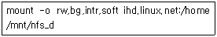
- ihd.linux.net:/home /mnt/nfs_d nfs rw,bg,intr,soft 0 0
- /mnt/nfs_d ihd.linux.net:/home nfs rw,bg,intr,soft 0 0
- ihd.linux.net:/home nfs /mnt/nfs_d rw,bg,intr,soft 0 0
- /mnt/nfs_d nfs ihd.linux.net:/home rw,bg,intr,soft 0 0
(정답률: 44%)
74. ProFTPd 설정 파일에서 anonymous가 새로 생성하는 디렉토리에 대하여 일반 계정 사용자가 서브 디렉토리를 생성할 수 있도록 허용하기 위한 Umask 값으로 가장 적절한 것은?
- Umask 022
- Umask 020
- Umask 002
- Umask 007
(정답률: 40%)
75. ProFTPd 설정 파일의 limit 지시자 내에서 사용 할 수 있는 명령이 아닌 것은?
- CWD
- RNTO
- WRITE
- RM
(정답률: 40%)
76. 시스템 관리자 홍길동은 사용 중인 NFS 서버의 /home/ihd 디렉토리를 192.1.2.×의 IP를 가지는 모든 클라이언트가 읽기 전용으로 마운트 할 수 있도록 설정하려고 한다. 이를 위해 nfs 설정 파일에 추가해야 할 내용으로 알맞은 것은?
- /home/ihd 192.1.2.1 ∼ 192.1.2.254(ro)
- /home/ihd 192.1.2.0/255.255.255.0(ro)
- /home/ihd 192.1.2.×(ro)
- /home/ihd 192.1.2.0 ∼ 192.1.2.254(ro)
(정답률: 60%)
77. 리눅스 시스템에서 호스트 이름이 ihd인 윈도우 2000 서버가 네트워크 상에 공유하고 있는 자원의 내용을 볼 수 있는 방법으로 알맞은 것은?
- konqueror의 주소 표시줄에 http://ihd 라고 입력한다.
- 한텀에서 smbclient -L ihd 명령을 이용한다.
- 한텀에서 smbstatus 명령을 이용한다.
- 위의 방법 모두 불가능하다.
(정답률: 54%)
78. Standalone 모드로 운영되는 ProFTPd의 설정 파일에서 접속 가능한 최대 사용자 수를 지정할 때 사용하는 지시자는?
- MaxUsers
- MaxConnections
- MaxAllows
- MaxInstances
(정답률: 43%)
79. Mailling List 관리 프로그램인 Majordomo에 대한 설명으로 맞는 것은?
- 메일 주소 리스트 파일의 퍼미션(Permission)은 644 이어야 한다.
- 자체적으로 메일 전송 기능을 가지고 있다.
- 보안 설정을 할 수 없다.
- Mailing List에 메일 주소를 추가하기 위해서는 리스트 파일을 직접 수정하는 방법으로만 가능하다.
(정답률: 9%)
80. Sendmail에서 특정 계정으로 전송되는 메일을 모두 다른 곳으로 전달하는데 이용할 수 있는 파일은?
- aliases
- named.conf
- access
- relay.conf
(정답률: 40%)
81. 다음 명령의 실행 결과에 대해 가장 적절하게 설명한 것은?
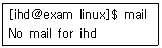
- Sendmail을 통하여 발송된 메일이 없음을 확인하고 있다.
- 시스템에 ihd 계정으로 전달된 메일이 없음을 확인 하고 있다.
- ihd라는 이름을 가진 호스트에 도착한 메일이 있는지 POP3 프로토콜을 이용하여 확인하고 있다.
- mail 이라는 명령어를 이용하여 한 개의 메일을 발송하고 있다.
(정답률: 54%)
82. 다음은 DNS 설정 파일 중 메일과 관련한 설정의 일부분이다. 이에 대한 설명으로 가장 적절한 것은?
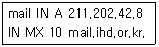
- Sendmail은 mail.ihd.or.kr에 한번에 최대 10개의 이메일을 동시에 전송할 수 있다.
- IP 주소가 211.202.42.8인 호스트는 이메일의 최종적인 배달지로서 Sendmail이 동작하고 있을 것이다.
- mail.ihd.or.kr로 전달된 이메일을 MX라는 이름을 가진 다른 호스트로 전달시키도록 설정되어 있다.
- IP 주소가 211.202.42.8인 호스트에 대해서 Sendmail 이 Relay를 금지시키고 있다.
(정답률: 45%)
83. /var/run/sendmail.pid 파일에 Sendmail 서버 프로세스의 PID 값이 저장되어 있다고 가정했을 때, 다음 명령에 대해 가장 적절하게 설명한 것은?
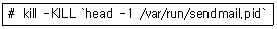
- Sendmail 프로그램이 속해있는 rpm 패키지를 제거하고 있다.
- Sendmail의 새로운 설정을 해당 프로세스가 알 수 있도록 갱신하고 있다.
- kill 명령을 통하여 Sendmail 서버 프로세스를 강제 종료시키고 있다.
- Sendmail 서버 프로세스의 PID 값이 얼마인지 확인하고 있다.
(정답률: 46%)
84. 다음 명령의 실행 결과에 대한 설명으로 가장 적절한 것은?
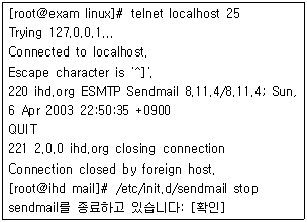
- 원격 시스템에 telnet으로 접속하여 사용자들에게 Sendmail 서비스가 중지될 것이라고 공지한 후, 서비스를 재시작하고 있다.
- Sendmail이 정상적으로 동작하고 있는지 확인한 후, 서비스를 중지시키고 있다.
- 원격 호스트에 Sendmail 서비스가 중지될 것이라고 공지 이메일을 보낸 후, Sendmail 서비스를 중지 시키고 있다.
- 원격 호스트에서 실행 중인 Sendmail 서비스에 접속 하여 해킹을 시도하고 있다.
(정답률: 40%)
85. 다음 명령의 실행 결과에 대한 설명으로 가장 적절한 것은?
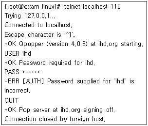
- 웹 서버가 제대로 동작 중인지 테스트하고 있다.
- POP3 서버로 접속하여 ihd 계정에 도착한 메일이 있는지 확인하는 작업이나, 패스워드를 잘못 입력하여 인증 오류가 발생하였다.
- IMAP 서버로 접속하여 ihd 계정에 도착한 메일을 성공적으로 가져왔다.
- Sendmail 서비스가 작동 중인지 테스트하고 있다.
(정답률: 55%)
86. 다음 명령의 실행 결과에 대한 설명으로 가장 적절한 것은?
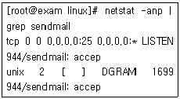
- Sendmail 관련 포트가 열려있는지 확인하고 있다.
- 시스템에서 어떤 메일들이 발송되고 있는지 확인하고 있다.
- Sendmail과 관련된 네트워크 트래픽 상태를 확인하고 있다.
- Sendmail 로그 파일을 netstat 유틸리티를 통해 분석하고 있다.
(정답률: 36%)
87. /etc/mail/access 파일을 이용하여 스팸메일을 방지하기 위한 방안으로 가장 적절하지 못한 것은?
- 특정 IP 주소로부터 발신된 메일 수신을 차단한다.
- 특정 URL로부터 발신된 메일 수신을 차단한다.
- 특정 이메일 주소로부터 발신된 메일 수신을 차단한다.
- 특정 문자열이 제목에 포함되어 있는 메일 수신을 차단한다.
(정답률: 53%)
88. NIS에 대한 설명으로 가장 적절하지 못한 것은?
- NIS는 하나의 마스터 서버와 여러 개의 슬레이브 서버를 가질 수 있다.
- NIS 서버를 초기화하기 전에 NIS 도메인을 설정해야 한다.
- NIS 도메인을 설정하는 명령어는 domainname이다.
- NIS 서버의 설정 파일은 yp.conf 파일이다.
(정답률: 12%)
89. NIS와 관련된 명령어에 대한 설명으로 틀린 것은?
- ypcat : NIS 맵(Map)의 내용을 출력한다.
- ypwhich : NIS 서비스를 담당할 NIS 서버의 이름을 출력한다.
- ypmatch : 특정 NIS 서버를 찾을 수 있다.
- yppasswd : NIS 서버에 기록되어 있는 사용자의 패스워드를 변경할 수 있다.
(정답률: 43%)
90. DNS 서버에 대한 설명으로 가장 적절하지 못한 것은?
- Primary 서버는 도메인을 대표하며 주 설정 파일을 가진다.
- Secondary 서버는 Primary 서버의 백업과 로드 분산을 위해 사용된다.
- Caching 서버는 클라이언트의 요청을 받으면 자신의 캐시를 먼저 살펴보고, 여기서 찾지 못하면 Primary 서버에게 요청한다.
- 임의의 DNS 서버가 도메인 A에 대해 primary 서버로 사용되면 다른 도메인 B에 대해 secondary 서버로 사용될 수 없다.
(정답률: 56%)
91. xinetd의 설정 파일인 /etc/xinetd.conf에서 사용되는 변수에 대한 설명으로 틀린 것은?
- socket_type : stream, dgram, raw 값을 지정할 수 있다.
- user : 서비스를 사용할 사용자 이름이다.
- server : 서비스가 연결되었을 때 실행할 프로그램이다.
- wait : 서비스 처리에 걸리는 시간을 지정한다.
(정답률: 60%)
92. xinetd의 특징에 대한 설명으로 틀린 것은?
- tcp_wrapper의 기능을 포함하고 있다.
- 시간대별, 호스트별로 접근 권한을 설정할 수 있다.
- syslog 레벨을 조정할 수 없게 되어있다.
- Dos 공격을 막기 위한 기능이 포함되어 있다.
(정답률: 53%)
93. 다음 중 DHCP 클라이언트 프로그램은?
- dhcp
- dhcpcd
- init.d
- dhcpd
(정답률: 35%)
94. 다음의 DHCP 설정 파일의 내용에 대한 설명으로 가장 적절하지 못한 것은?
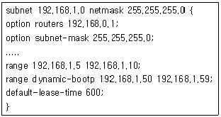
- 클라이언트에게 192.168.1.5 부터 192.168.1.10 까지의 IP 주소를 할당한다.
- BOOTP 클라이언트에게는 192.168.1.50부터 192.168.1.59 까지의 IP 주소를 할당한다.
- 600분 동안 IP 주소를 할당한다.
- 디폴트 게이트웨이의 IP 주소는 192.168.0.1이다.
(정답률: 63%)
95. DNS를 설정할 때 사용하는 레코드에 대한 설명으로 틀린 것은?
- A : 호스트 이름을 IP 주소로 대응시킨다.
- MX : Zone의 메일 서버를 지정한다.
- CNAME : Zone의 네임 서버를 지정한다.
- TXT : 연락처 정보와 같이 어떠한 내용도 적을 수 있는 레코드이다.
(정답률: 44%)
96. 사용자에 의해 잘못 실행된 프로그램이 프로세스를 계속 생성하여 시스템이 다운되었다면, 이는 어떤 침해 유형에 속한다고 볼 수 있는가?
- 서비스 거부 공격(Denial of Service Attack)
- 트로이 목마(Trojan Horse)
- 웜 바이러스(Worm Virus)
- 버퍼 오버플로우(Buffer Overflow)
(정답률: 23%)
97. VPN(Virtual Private Network)에 대한 설명으로 올바르지 못한 것은?
- VPN은 인터넷과 같은 공중망을 사용하여 사설망을 구축하게 해 주는 기술 혹은 통신망을 의미한다.
- VPN이 대두되는 가장 큰 이유는 출발지로부터 도착지까지의 중간 경유 라우터에서의 보안 유지를 위해서이다.
- VPN은 공중망을 사용하지만 사용자가 장소를 옮기는 경우에는 그에 따른 시설을 모두 이전, 변경하여야 한다.
- VPN은 IP 패킷을 인캡슐레이션하는 방식을 이용한다.
(정답률: 62%)
98. 다음이 설명하는 것은 무엇인가?
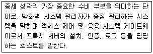
- 이중 네트워크 호스트
- 배스천 호스트
- 스크린 호스트 게이트웨이
- 스크리 라우터
(정답률: 75%)
99. 방화벽 시스템으로서 갖추어야 할 기본 구성 요소와 가장 거리가 먼 것은?
- 네크워크 정책
- 사용자 인증 시스템
- 패킷 필터링
- 파일 시스템 관리
(정답률: 71%)
100. 리눅스에서 패킷 필터링을 하기 위하여 사용되는 Iptables에 대한 설명으로 틀린 것은?
- 특정 IP 주소에 대한 접근을 거부할 수 있다.
- 특정 서비스에 대한 접근을 거부할 수 있다.
- 모든 체인의 기본 정책은 INPUT으로 해야 하며, 접근 거부하고자 하는 것만 DENY 혹은 DROP으로 설정한다.
- 체인 정책을 이용하여 NAT(Network Address Translation)를 설정할 수 있다.
(정답률: 69%)